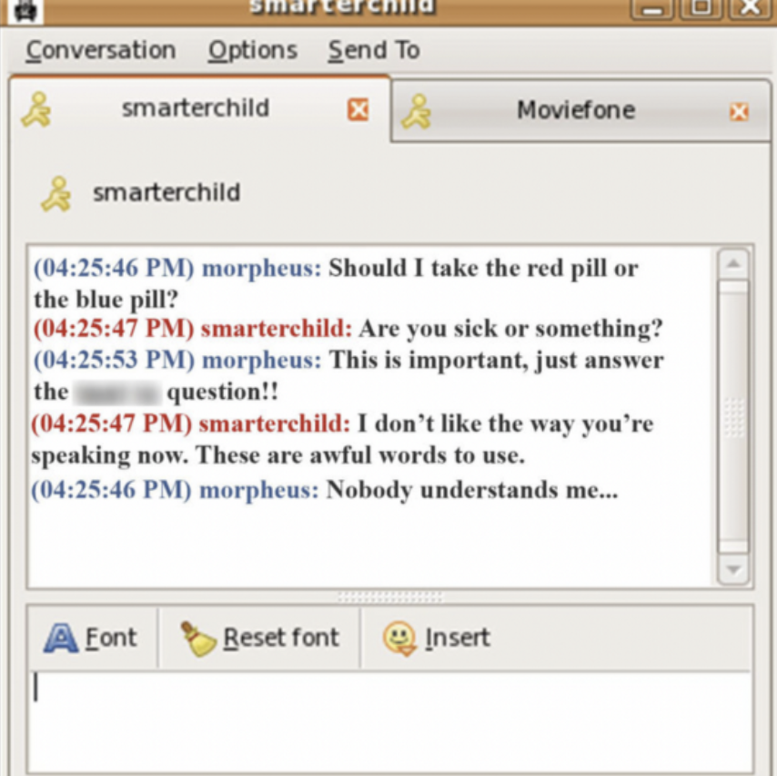

Home
Week 1:
Class Overview, Ancient Intelligence
Week 2:
Chance & Protocol: Early Generative Art and Literature
Week 3:
Chatbots and Generative text
Week 4:
Generative Adversarial Networks
Week 5:
Data, The internet
Week 6:
Data Labor
Week 7:
Classification, Taxonomies, Computer Vision, Machine Evaluation
Week 8:
Facial Recognition, Identity, Surveillance
Week 9:
Deepfakes
Week 10:
Writing Images, Text to Image Models
Week 11:
AI optimism vs idealism in creative practices, with special focus on Music
Week 12:
The Digital is Physical: Environmental Impact
Week 13:
The Digital is Physical: Environmental Impact
Week 14:
Office Hours
Week 15:
Final Presentations
Final Project
Blog Post Assignment
Resources
Week 3: Chatbots and Generative text

Smarterchild
slides
Homework
Our generative text from class:
Aliyakhon
BellaClare
Edie
Jeong
Luchia
María José
Mary
Oskar
Queenie
Yijie
Yulia